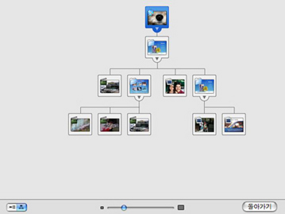

맵 보기를 열려면,
iDVD 윈도우의 하단에 있는 맵 단추(아래 참조)를 클릭하십시오.

맵 보기를 사용하여 프로젝트를 그래픽적으로 볼 수 있습니다. 맵에는(아래 참조) 프로젝트의 각 요소에 대한 아이콘들과 각 항목에 대한 탐색 경로가 포함되어 있습니다. 맵 보기는 모든 부메뉴, 슬라이드쇼 및 동영상, 그리고 서로 어떻게 링크되어 있는지를 추적할 수 있는 쉬운 방법을 제공합니다. 또한, 프로젝트에서 디스크에 굽기 전에 수정해야 하는 문제가 있는 곳을 경고 기호 및 메시지와 함께 나타냅니다.
또한, 맵 보기에서 프로젝트를 편집할 수도 있습니다. 추가 정보를 보려면, 관련 주제를 참조하십시오.

iDVD 윈도우의 하단에 있는 맵 단추(아래 참조)를 클릭하십시오.
맵 보기를 열었을 때 선택한 메뉴 아이콘은 맵에서 파란색으로 강조됩니다.
많은 방법으로 맵을 수정하여 프로젝트를 가장 효율적으로 볼 수 있습니다. 수직 또는 수평 방향을 선택할 수 있습니다. 또한, 윈도우 하단에 있는 슬라이더를 드래그하여 아이콘에 세부사항을 더 많게 또는 더 적게 표시할 수 있습니다. 부메뉴가 많은 복잡한 프로젝트를 가지고 있다면 스크롤 막대를 사용하여 전체 맵을 볼 수 있습니다. 또는 맵의 크기를 조절하여 윈도우에 맞추려면, 맵 아래에 있는 슬라이더를 이동하십시오. 메뉴 화면 아이콘의 하단이나 오른쪽에 있는 펼침 삼각형을 클릭하여 맵을 접거나 단순화합니다.
맵 보기를 종료하려면, 맵 보기 단추를 클릭하거나 돌아가기 단추를 클릭하십시오.